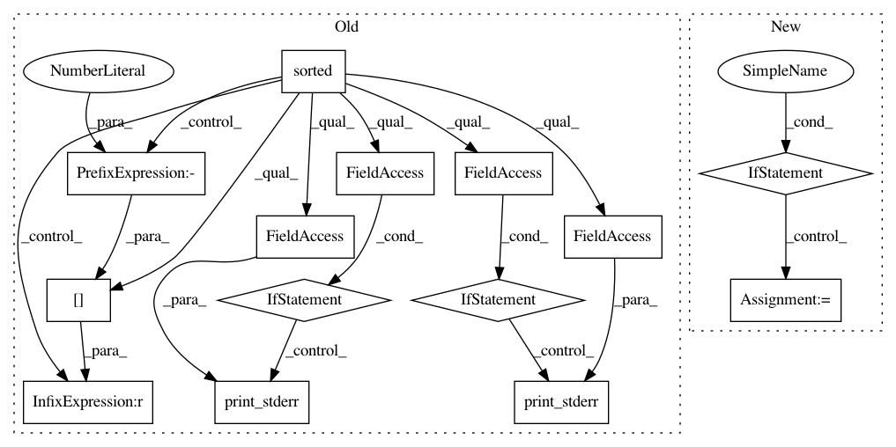

88072c9b78824a5f78cf62399246eecdc360a33c,src/python/pants/core/goals/typecheck.py,,typecheck,#Any#Any#Any#,78
Before Change
Get(TypecheckResults, TypecheckRequest, request) for request in valid_requests
)
sorted_results = sorted(
itertools.chain.from_iterable(results), key=lambda res: res.typechecker_name
)
if not sorted_results:
return Typecheck(exit_code=0)
exit_code = 0
for result in sorted_results:
console.print_stderr(
f"{console.green("✓")} {result.typechecker_name} succeeded."
if result.exit_code == 0
else f"{console.red("𐄂")} {result.typechecker_name} failed."
)
if result.stdout:
console.print_stderr(result.stdout)
if result.stderr:
console.print_stderr(result.stderr)
if result != sorted_results[-1]:
console.print_stderr("")
if result.exit_code != 0:
exit_code = result.exit_code
After Change
if results.skipped:
sigil = console.yellow("-")
status = "skipped"
elif results.exit_code == 0:
sigil = console.green("✓")
status = "succeeded"
else:
sigil = console.red("𐄂")
status = "failed"
In pattern: SUPERPATTERN
Frequency: 3
Non-data size: 14
Instances
Project Name: pantsbuild/pants
Commit Name: 88072c9b78824a5f78cf62399246eecdc360a33c
Time: 2020-08-19
Author: 14852634+Eric-Arellano@users.noreply.github.com
File Name: src/python/pants/core/goals/typecheck.py
Class Name:
Method Name: typecheck
Project Name: pantsbuild/pants
Commit Name: 705a3dcb90454c2d6ab2a857ac0b88dff2ef0bab
Time: 2020-08-16
Author: 14852634+Eric-Arellano@users.noreply.github.com
File Name: src/python/pants/core/goals/lint.py
Class Name:
Method Name: lint
Project Name: pantsbuild/pants
Commit Name: 765fe64b6e96c365aaee4867c5a8381a883c5bc6
Time: 2020-08-16
Author: 14852634+Eric-Arellano@users.noreply.github.com
File Name: src/python/pants/core/goals/fmt.py
Class Name:
Method Name: fmt